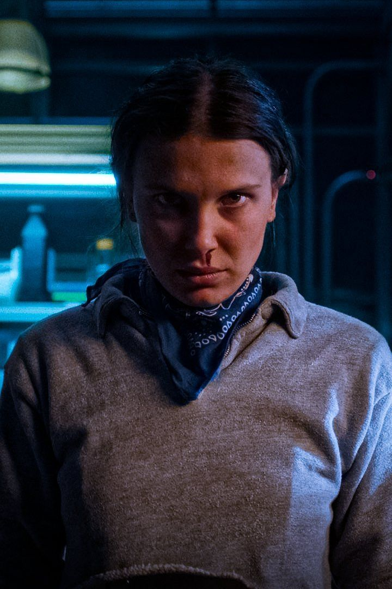
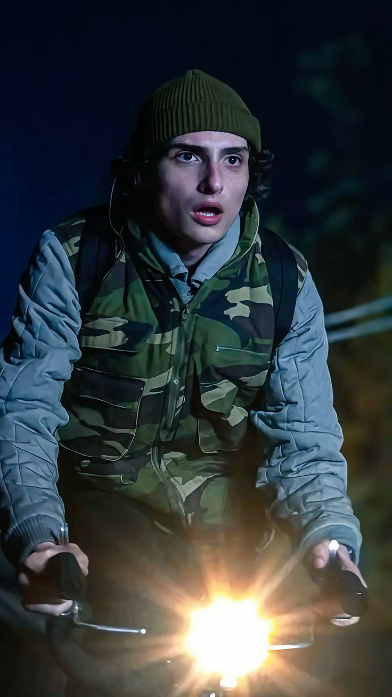
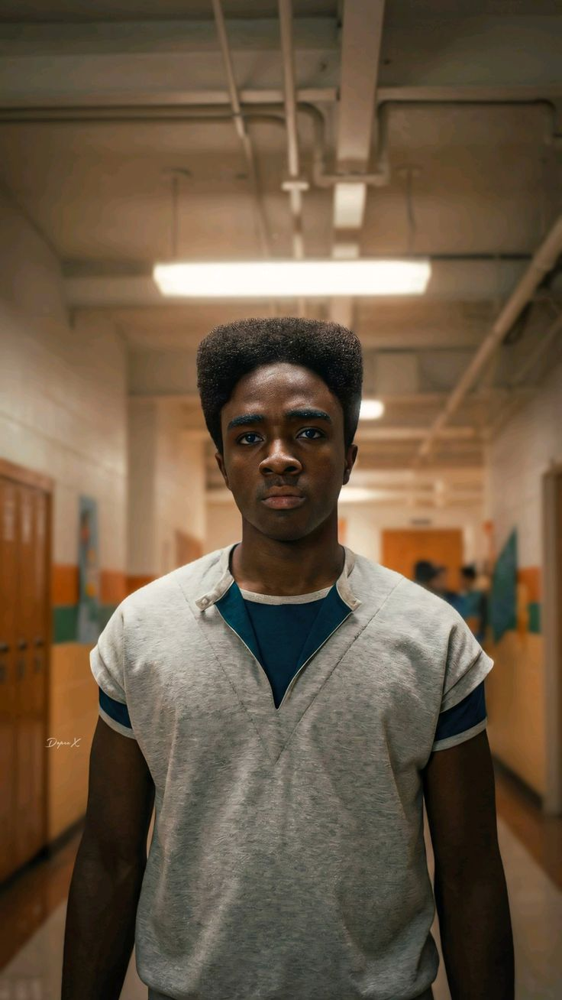
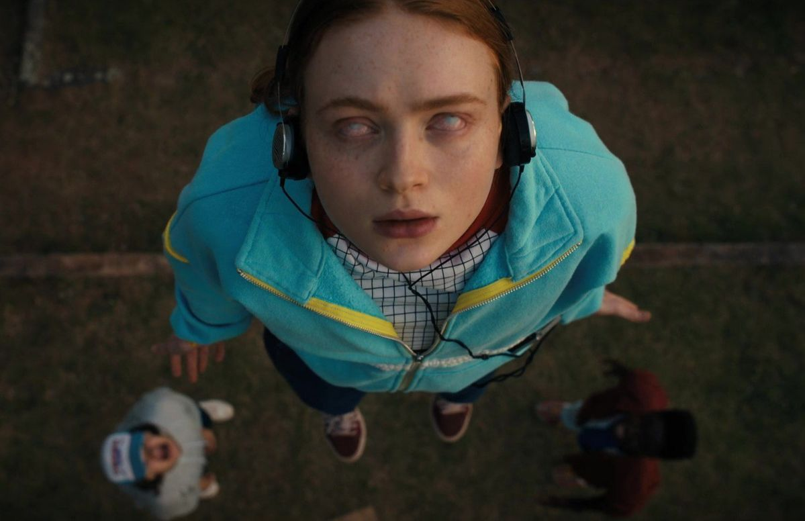
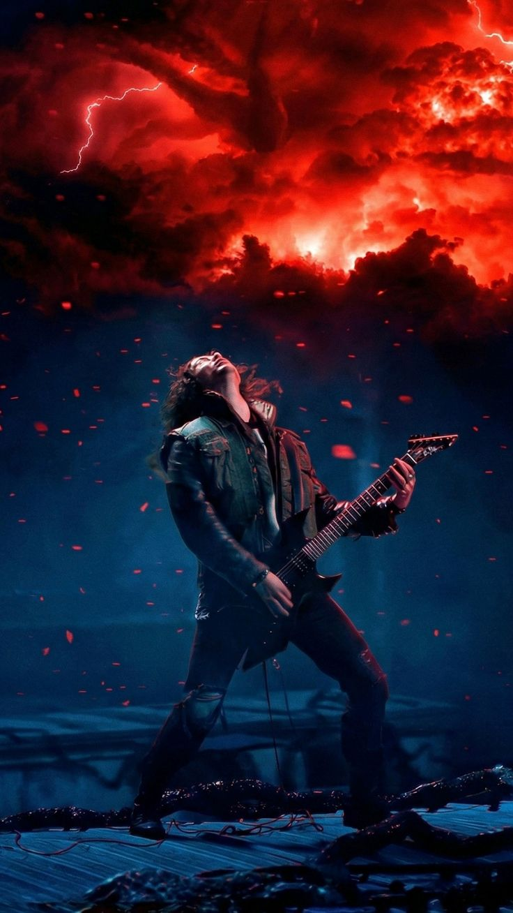
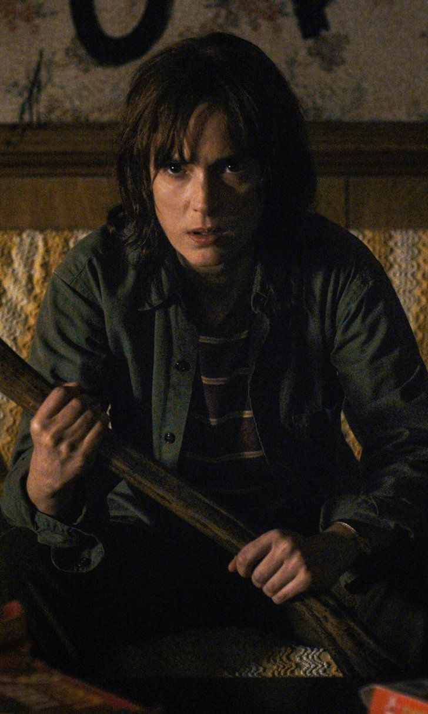
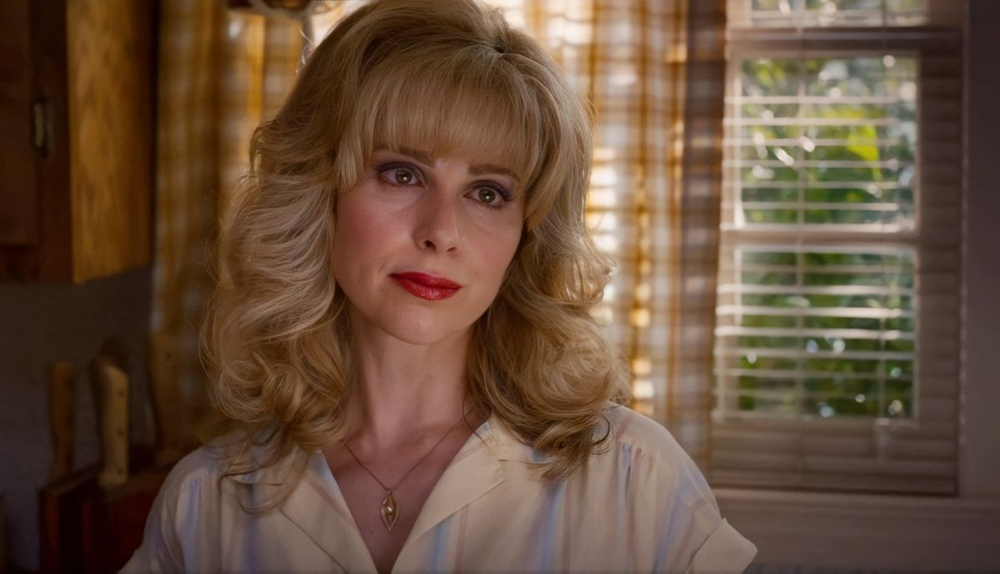

Eleven
A powerful young girl with psychokinetic abilities who escaped from Hawkins National Laboratory. She is the ultimate weapon against the threats emerging from the Upside Down and fights fiercely to protect her friends.

Mike Wheeler
The core leader of the group. Mike is fiercely loyal to his friends and refuses to give up on finding Will or protecting Eleven, no matter the danger involved.

Dustin Henderson
The highly intelligent, tech-savvy compass of the group. Dustin uses his logic, scientific curiosity, and radio equipment to solve complex paranormal mysteries.

Lucas Sinclair
The pragmatic, sharp-witted realist of the party. Lucas protects his friends using practical tactical thinking and survival instincts.

Will Byers
His disappearance into the Upside Down started it all. Having survived the shadow realm, Will retains a lingering supernatural connection to the Mind Flayer and the Hive Mind.

Max Mayfield
A tough, skateboard-riding newcomer who becomes an essential member of the party. Her emotional strength is tested to the absolute limit against Vecna's curses.

Steve Harrington
He evolved from a high school king to the ultimate baseball-bat-swinging guardian of the kids, proving himself to be incredibly brave when dealing with Demodogs.

Eddie Munson
The metalhead guitarist and outcast who runs the D&D campaign. He finds himself framed for things he didn't do and ultimately shows what true bravery looks like in the Upside Down.

Joyce Byers
A fierce, fiercely determined mother who refuses to back down. Whether decoding wall lights or traveling across the world, she will do absolutely anything to protect her children.

Jim Hopper
Hawkins' rugged chief of police. He provides the heavy muscle and tactical experience needed to protect the town and uncover classified lab conspiracies.

Karen Wheeler
The classic suburban mother trying her best to look after her family, managing a busy household while major paranormal events unfold right around them.
